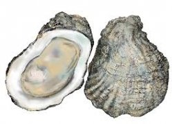

Welcome to austrės
Austrės
2020.10.29 10:04+370 698 25166 info@dovanos.lt Facebook Specialūs pasiūlymai Apie mus Susisiekite su mumis 0 prekė(s) - 0.00€
Jūsų prekių krepšelis tuščias
Įvairiom progomDovanos jūros tema
Jūrinė tekstilė Jūriniai raktų pakabukai Kompasai Varpai ir VarpeliaiDovanos moterims
Dovanos vaikams
Berniukams Calafant Mediniai žaislai Mergaitėms Muzikos intrumentaiDovanos vyrams
Išskirtinės dovanos
Japoniškos dovanos
Verslo dovanos
Rašymo priemonės Verslo aksesuarai Vizitinių kortelių dėklai + VersluiBiurui
Darbo pažymėjimams Plastikinės kortelės Rašymo priemonėsProginės monetos
Žemėlapiai
Apdovanojimai
Medaliai Stikliniai trofėjai TaurėsBarometrai
Gaubliai
Laikrodžiai
Rankiniai laikrodžiai Sieniniai laikrodžiai Smėlio laikrodžiai Stalo laikrodžiaiOdos gaminiai
Moteriškos piniginės Papkės Portfeliai Raktinės Vyriškos piniginėsRaktų pakabukai
Vėliavos ir jų priedai
Laivų vėliavos Lietuvos ir miestų vėliavos Nuoma Pasaulio vėliavos Priedai vėliavoms Reklaminės vėliavos Stalo vėliavėlės + ReklamaiSkėčiai
Suvenyriniai šalmai
Tekstilės gaminiai
Kepuraitės Liemenės Maišeliai Rankšluosčiai Reklamai Suvenyriniai marškinėliai VirtuveiReklaminiai stendai ir Užrašų uždėjimo būdai
Lazerinis graviravimas Mobilūs reklaminiai stendai POLIFLEX plėvelė Šilkografija Transferas. Perkeliamoji šilkografinė spaudaVėliavos ir jų priedai
Laivų vėliavos Lietuvos ir miestų vėliavos Nuoma Pasaulio vėliavos Priedai vėliavoms Reklaminės vėliavos Stalo vėliavėlėsSkarelės, Movos, Šalikai
Gairelės ir Vimpilai
Reklaminiai raktų pakabukai ir ženkliukai
Reklaminiai tušinukai
Marškinėliai
+ LaisvalaikiuiInkiliukai
Inkiliukai paukščiams Knygos apie paukščius Lesyklėlės Vabzdžių viešbučiaiKaljanai
Dovanos jūros tema
Jūrinė tekstilė Jūriniai raktų pakabukai Kompasai Varpai ir VarpeliaiNamams
Foto rėmeliai ir albumai Arbatinukai Namų žvakės Padėklai Paveikslai Prieskoninės,padažinės Puodeliai ir Gertuvės Samovarai Suvenyrai Vaisinės Vazos Virtuviniai įrankiai Virtuviniai puodai Viskas kavai Viskas kepimui Viskas kokteiliams Viskas vynuiLaikrodžiai
Rankiniai laikrodžiai Sieniniai laikrodžiai Smėlio laikrodžiai Stalo laikrodžiaiLaisvalaikiui
Įrankiai Kuprinės Petankė Prožektoriai ŽaidimaiSkėčiai
Suvenyriniai šalmai
Viskas rūkantiems
Peleninės Portsigarai Žiebtuvėliai Zippo žiebtuvėliaiRaktų pakabukai
Viskas automobiliui
+ Lietuviška atributikaLietuviška atributika
Gertuvės Kepuraitės Kita atributika Krepšiai Krepšinio atributika Kuprinės Magnetukai Namams Raktų pakabukai Rašikliai Tekstilė Vizitinių kortelių dėklai ŽiebtuvėliaiVėliavos ir jų priedai
Laivų vėliavos Lietuvos ir miestų vėliavos Nuoma Pasaulio vėliavos Priedai vėliavoms Reklaminės vėliavos Stalo vėliavėlės + Įvairios prekėsAustrės
Žuvies ikrai
Pakuotės
Tekstilės gaminiai
Kepuraitės Liemenės Maišeliai Rankšluosčiai Reklamai Suvenyriniai marškinėliai Virtuvei + Pradžia Austrės Išvalyti filtrą KainaAustrės
Austrės - tai gurmaniškas patiekalas, kupinas organizmui naudingų medžiagų: cinko, geležies, magnio, vario, kalcio, natrio, jodo, fluoro, fosforo, gliukozės, vitaminų А, В1, В2, В6, С, РР, В12. Be to, austrėse yra vos 2 gramai riebalų, o šimte jų gramų tėra 60-70 kalorijų. O ypatingos austrių amino rūgštys ir rekordinis cinko kiekis skatina abiejų lyčių atstovų lytinių hormonų sintezę. Austrės labai teigiamai veikia odos, plaukų nagų ir bendrą kūno būklę.
www. austres.lt
Prekių palyginimas (0) Rodyti: 25 50 75 100 Rūšiuoti pagal: Standartinė Pavadinimas (A - Z) Pavadinimas (Z - A) Kaina (Žema Aukšta) Kaina (Aukšta Žema) Prekės kodas (A - Z) Prekės kodas (Z - A) Pageidauti PalygintiNerūdijančio plieno peilis austrėms
12.50€ Be PVM: 12.50€ Į krepšelį Pageidauti Palyginti Rodoma nuo 1 iki 1 iš 1 (1 puslapių)Informacija užsakovui
Apie mus Pristatymo informacija Privatumo politika Sąlygos ir taisyklėsKita informacija
Specialūs pasiūlymai Susisiekite su mumis Svetainės žemėlapisPirkėjo paskyra
Prisijungti Užsakymų istorija Norų sarašas